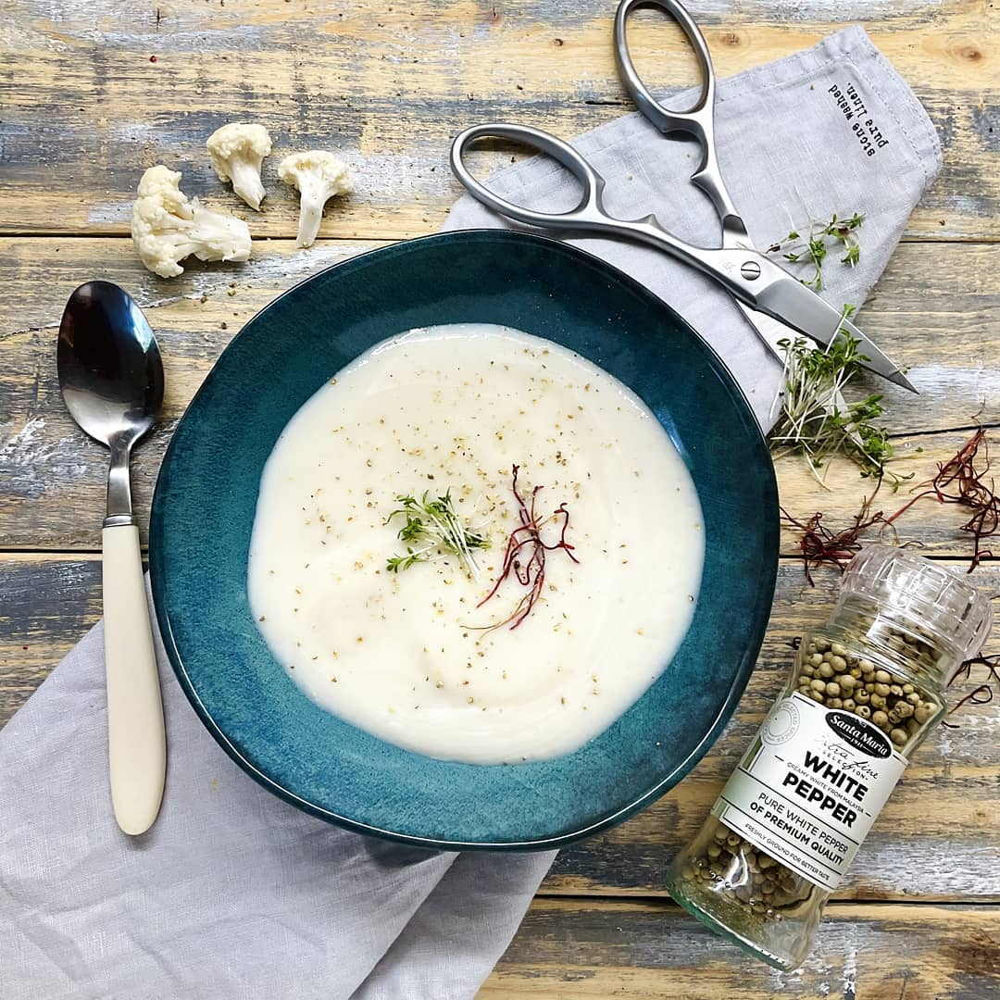

Karfiolová polievka podľa @cookucka — Normy Jedál
Uznávam, že Karfiolová polievka zneje otrasne🙈 Ale predstavte si ju ako jemný krém so smotanou, muškátovým orieškom a bielym, čerstvo mletým korením.
Fakt dobrota a rýchlo hotová!
Aj králikom listy z karfiólu ostali🐰
Recept:
-1 menší karfiól
-1 smotana na varenie
- Soľ, muškátový oriešok a biele korenie
-žerucha
Karfiol rozobrať. Veľké hlúbiky odstrániť, ale časť môžete aj pochrúmať. Karfiolové hlavičky dať variť do vriacej osolenej vody. Keď sú mäkké, nie rozvarené! pridať smotanu a odstaviť. Korenia do horúceho a počkať ako pri čaji, kým sa pár minút poluhujú🤍
#karfiol #karfiolovapolievka #karfiolova #kremovapolievka #kremovapolevka #creamysoup #whitepepper #nutmeg #cauliflower #cauliflowerrecipes #cauliflowersoup